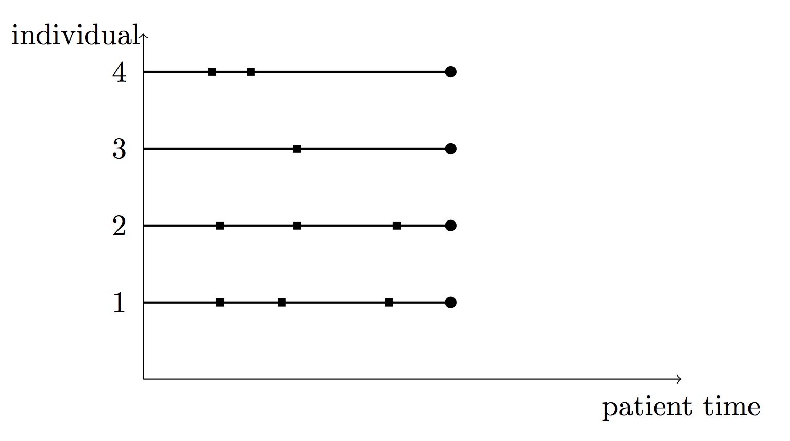
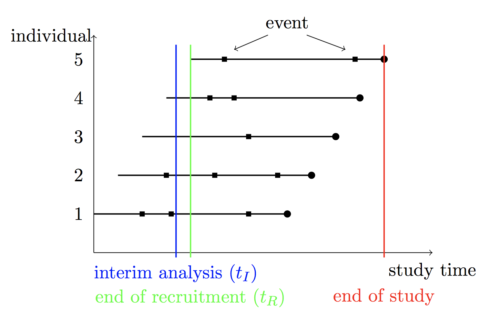

vignettes/simrec-vignette.Rmd
simrec-vignette.Rmdsimrec allows simulation of recurrent event data
following the multiplicative intensity model described in (Andersen and Gill 1982) with the baseline
hazard being a function of the total/calendar time. To induce
between-subject-heterogeneity a random effect covariate (frailty term)
can be incorporated. Furthermore, via simreccomp simulation
of data following a multistate model with recurrent event data of one
type and a competing event is possible. simrecint gives the
possibility to additionally simulate a recruitment time for each
individual and cut the data to an interim data set. With
simrecPlot and simreccompPlot the data can be
plotted.
Keywords: recurrent event data, competing event, frailty, simulation, total-time model
The simrec package includes the functions
simrec, simreccomp and simrecint
and allows simulation of recurrent event data. To induce
between-subject-heterogeneity a random effect covariate (frailty term)
can be incorporated. Via simreccomp time-to-event data that
follow a multistate model with recurrent event data of one type and a
competing event can be simulated. Data output is in the counting-process
format. simrecint gives the possibility to additionally
simulate a recruitment time for each individual and cut the data to an
interim data set. With simrecPlot and
simreccompPlot the data can be plotted.
simrec function
The function simrec allows simulation of recurrent event
data following the multiplicative intensity model described in Andersen
and Gill (Andersen and Gill 1982) with the
baseline hazard being a function of the total/calendar time. To induce
between-subject-heterogeneity a random effect covariate (frailty term)
can be incorporated. Data for individual
are generated according to the intensity process
where
defines the covariate vector, and
the regression coefficient vector.
denotes the baseline hazard, being a function of the total/calendar time
,
and
the predictable process that equals one as long as individual
is under observation and at risk for experiencing events.
denotes the frailty variable with
iid with
and
.
The parameter
describes the degree of between-subject-heterogeneity. Data output is in
the counting process format.
simrec(N, fu.min, fu.max, cens.prob = 0, dist.x = "binomial", par.x = 0,
beta.x = 0, dist.z = "gamma", par.z = 0, dist.rec, par.rec, pfree = 0,
dfree = 0)N Number of individuals
fu.min Minimum length of follow-up.
fu.max Maximum length of follow-up. Individuals
length of follow-up is generated from a uniform distribution on
[fu.min, fu.max]. If fu.min=fu.max, then all
individuals have a common follow-up.
cens.prob Gives the probability of being censored
due to loss to follow-up before fu.max. For a random set of
individuals defined by a B(N,cens.prob)-distribution, the
time to censoring is generated from a uniform distribution on
[0, fu.max]. Default is cens.prob=0, i.e. no
censoring due to loss to follow-up.
dist.x Distribution of the covariate(s)
.
If there is more than one covariate, dist.x must be a
vector of distributions with one entry for each covariate. Possible
values are "binomial" and "normal", default is
"binomial".
par.x Parameters of the covariate distribution(s).
For "binomial", par.x is the probability for
.
For "normal", par.x is the vector of
()}
where
is the mean and
is the standard deviation of a normal distribution. If one of the
covariates is defined to be normally distributed, par.x
must be a list, e.g. dist.x <- c("binomial", "normal")
and par.x <- list(0.5, c(1,2)). Default is
par.x = 0,
i.e.
for all individuals.
beta.x Regression coefficient(s) for the
covariate(s)
.
If there is more than one covariate, beta.x must be a
vector of coefficients with one entry for each covariate.
simrec generates as many covariates as there are entries in
beta.x. Default is beta.x = 0, corresponding
to no effect of the covariate
.
dist.z Distribution of the frailty variable
with
and
.
Possible values are "gamma" for a Gamma distributed frailty
and "lognormal" for a lognormal distributed frailty.
Default is dist.z="gamma".
par.z Parameter
for the frailty distribution: this parameter gives the variance of the
frailty variable
.
Default is par.z=0, which causes
,
i.e. no frailty effect.
dist.rec Form of the baseline hazard function.
Possible values are "weibull" or "gompertz" or
"lognormal" or "step".
par.rec Parameters for the distribution of the event
data.
If dist.rec="weibull" the hazard function is
where
is the scale and
is the shape parameter. Then par.rec=c(lambda, nu). A
special case of this is the exponential distribution for
.\
If dist.rec="gompertz", the hazard function is
where
is the scale and
is the shape parameter. Then par.rec=c(lambda, alpha).
If dist.rec="lognormal", the hazard function is
where
is the probability density function and
is the cumulative distribution function of the standard normal
distribution,
is a location parameter and
is a shape parameter. Then par.rec=c(mu,sigma). Please note
that specifying dist.rec="lognormal" together with some
covariates does not specify the usual lognormal model (with covariates
specified as effects on the parameters of the lognormal distribution
resulting in non-proportional hazards), but only defines the baseline
hazard and incorporates covariate effects using the proportional hazard
assumption.
If dist.rec="step" the hazard function is
$$\lambda_0(t)=\begin{cases} a, & t\leq
t_1\cr b, & t>t_1\end{cases}$$ Then
par.rec=c(a,b,t_1), with
.
pfree Probability that after experiencing an event
the individual is not at risk for experiencing further events for a
length of dfree time units. Default is
pfree = 0.
dfree Length of the risk-free interval. Must be in
the same time unit as fu.max. Default is
dfree = 0, i.e. the individual is continously at risk for
experiencing events until end of follow-up.
The output is a data.frame consisting of the
columns:
id An integer number for identification of each
individualx or x.V1, x.V2, ... - depending on the
covariate matrix. Contains the randomly generated value of the
covariate(s)
for each individual.z Contains the randomly generated value of the frailty
variable
for each individual.start The start of interval [start, stop],
when the individual starts to be at risk for a next event.stop The time of an event or censoring, i.e. the end of
interval [start, stop].status An indicator of whether an event occured at time
stop (status=1) or the individual is censored
at time stop (status=0).fu Length of follow-up period [0,fu] for
each individual.For each individual there are as many lines as it experiences events, plus one line if being censored. The data format corresponds to the counting process format.
Data are simulated by extending the methods proposed by Bender (Bender, Augustin, and Blettner 2005) to the multiplicative intensity model. You can read more on this in our work (Jahn-Eimermacher et al. 2015).
library(simrec)
### Example:
### A sample of 10 individuals
N <- 10
### with a binomially distributed covariate with a regression coefficient
### of beta=0.3, and a standard normally distributed covariate with a
### regression coefficient of beta=0.2,
dist.x <- c("binomial", "normal")
par.x <- list(0.5, c(0, 1))
beta.x <- c(0.3, 0.2)
### a gamma distributed frailty variable with variance 0.25
dist.z <- "gamma"
par.z <- 0.25
### and a Weibull-shaped baseline hazard with shape parameter lambda=1
### and scale parameter nu=2.
dist.rec <- "weibull"
par.rec <- c(1,2)
### Subjects are to be followed for two years with 20\% of the subjects
### being censored according to a uniformly distributed censoring time
### within [0,2] (in years).
fu.min <- 2
fu.max <- 2
cens.prob <- 0.2
### After each event a subject is not at risk for experiencing further events
### for a period of 30 days with a probability of 50\%.
dfree <- 30/365
pfree <- 0.5
simdata <- simrec(N, fu.min, fu.max, cens.prob, dist.x, par.x, beta.x,
dist.z, par.z, dist.rec, par.rec, pfree, dfree)
print(simdata[1:10,])
DT::datatable(simdata)## id x.V1 x.V2 z start stop status fu
## 1 1 0 0.4631747 0.8736472 0.0000000 0.2365923 1 2.000000
## 2 1 0 0.4631747 0.8736472 0.2365923 1.0050462 1 2.000000
## 3 1 0 0.4631747 0.8736472 1.0872379 1.3745703 1 2.000000
## 4 1 0 0.4631747 0.8736472 1.3745703 1.6846287 1 2.000000
## 5 1 0 0.4631747 0.8736472 1.7668205 1.9146536 1 2.000000
## 6 1 0 0.4631747 0.8736472 1.9968454 2.0000000 0 2.000000
## 7 2 0 -0.8561524 0.3712202 0.0000000 1.3983031 1 1.749201
## 8 2 0 -0.8561524 0.3712202 1.4804949 1.7492013 0 1.749201
## 9 3 0 0.6480433 2.3222729 0.0000000 0.4794496 1 2.000000
## 10 3 0 0.6480433 2.3222729 0.5616413 0.6825923 1 2.000000simreccomp function
The function simreccomp allows simulation of
time-to-event-data that follow a multistate-model with recurrent events
of one type and a competing event. The baseline hazard for the
cause-specific hazards are here functions of the total/calendar time. To
induce between-subject-heterogeneity a random effect covariate (frailty
term) can be incorporated for the recurrent and the competing event.
Data for the recurrent events of the individual are generated according to the cause-specific hazards where defines the covariate vector and the regression coefficient vector. denotes the baseline hazard, being a function of the total/calendar time and denotes the frailty variables with iid with and . The parameter describes the degree of between-subject-heterogeneity for the recurrent event. Analougously the competing event is generated according to the cause-specific hazard conditionally on the frailty variable and covariates: Data output is in the counting process format.
simreccomp(N, fu.min, fu.max, cens.prob = 0, dist.x = "binomial", par.x = 0,
beta.xr = 0, beta.xc = 0, dist.zr = "gamma", par.zr = 0, a = NULL,
dist.zc = NULL, par.zc = NULL, dist.rec, par.rec,
dist.comp, par.comp, pfree = 0, dfree = 0)N Number of individuals
fu.min Minimum length of follow-up.
fu.max Maximum length of follow-up. Individuals
length of follow-up is generated from a uniform distribution on
[fu.min, fu.max]. If fu.min=fu.max, then all
individuals have a common follow-up.
cens.prob Gives the probability of being censored
due to loss to follow-up before fu.max. For a random set of
individuals defined by a B(N,cens.prob)-distribution, the
time to censoring is generated from a uniform distribution on
[0, fu.max]. Default is cens.prob=0, i.e. no
censoring due to loss to follow-up.
dist.x Distribution of the covariate(s)
.
If there is more than one covariate, dist.x must be a
vector of distributions with one entry for each covariate. Possible
values are "binomial" and "normal", default is
"binomial".
par.x Parameters of the covariate distribution(s).
For "binomial", par.x is the probability for
.
For "normal", par.x is the vector of
()}
where
is the mean and
is the standard deviation of a normal distribution. If one of the
covariates is defined to be normally distributed, par.x
must be a list, e.g. dist.x <- c("binomial", "normal")
and par.x <- list(0.5, c(1,2)). Default is
par.x = 0,
i.e.
for all individuals.
beta.xr Regression coefficient(s) for the
covariate(s)
corresponding to the recurrent events. If there is more than one
covariate, beta.xr must be a vector of coefficients with
one entry for each covariate. simreccomp generates as many
covariates as there are entries in beta.xr. Default is
beta.xr = 0, corresponding to no effect of the covariate
on the recurrent events.
beta.xc Regression coefficient(s) for the
covariate(s)
corresponding to the competing event. If there is more than one
covariate, beta.xc must be a vector of coefficients with
one entry for each covariate. simreccomp generates as many
covariates as there are entries in beta.xc. Default is
beta.xc = 0, corresponding to no effect of the covariate
on the competing event.
dist.zr Distribution of the frailty variable
for the recurrent events with
and
.
Possible values are "gamma" for a Gamma distributed frailty
and "lognormal" for a lognormal distributed frailty.
Default is dist.zr="gamma".
par.zr Parameter
for the frailty distribution: this parameter gives the variance of the
frailty variable
.
Default is par.zr=0, which causes
,
i.e. no frailty effect for the recurrent events.
dist.zc Distribution of the frailty variable
for the competing event with
and
.
Possible values are "gamma" for a Gamma distributed frailty
and "lognormal" for a lognormal distributed
frailty.
par.zc Parameter
for the frailty distribution: this parameter gives the variance of the
frailty variable
.
a Alternatively, the frailty distribution for the
competing event can be computed through the distribution of the frailty
variable
by
.
Either a or dist.zc and par.zc
must be specified.
dist.rec Form of the baseline hazard function for
the recurrent events. Possible values are "weibull" or
"gompertz" or "lognormal" or
"step".
par.rec Parameters for the distribution of the
recurrent event data.
If dist.rec="weibull" the hazard
function is
where
is the scale and
is the shape parameter. Then par.rec=c(lambda, nu). A
special case of this is the exponential distribution for
.\
If dist.rec="gompertz", the hazard function is
where
is the scale and
is the shape parameter. Then par.rec=c(lambda, alpha).
If dist.rec="lognormal", the hazard function is
where
is the probability density function and
is the cumulative distribution function of the standard normal
distribution,
is a location parameter and
is a shape parameter. Then par.rec=c(mu,sigma). Please note
that specifying dist.rec="lognormal" together with some
covariates does not specify the usual lognormal model (with covariates
specified as effects on the parameters of the lognormal distribution
resulting in non-proportional hazards), but only defines the baseline
hazard and incorporates covariate effects using the proportional hazard
assumption.
If dist.rec="step" the hazard function is
$$\lambda_0(t)=\begin{cases} a, & t\leq
t_1\cr b, & t>t_1\end{cases}$$ Then
par.rec=c(a,b,t_1), with
.
dist.comp Form of the baseline hazard function for
the competing event. Possible values are "weibull" or
"gompertz" or "lognormal" or
"step".
par.comp Parameters for the distribution of the
competing event data. For more details see
par.rec.
pfree Probability that after experiencing an event
the individual is not at risk for experiencing further events for a
length of dfree time units. Default is
pfree = 0.
dfree Length of the risk-free interval. Must be in
the same time unit as fu.max. Default is
dfree = 0, i.e. the individual is continously at risk for
experiencing events until end of follow-up.
The output is a data.frame consisting of the
columns:
id An integer number for identification of each
individualx or x.V1, x.V2, ... - depending on the
covariate matrix. Contains the randomly generated value of the
covariate(s)
for each individual.zr Contains the randomly generated value of the frailty
variable
for each individual.zc Contains the randomly generated value of the frailty
variable
for each individual.start The start of interval [start, stop],
when the individual starts to be at risk for a next event.stop The time of an event or censoring, i.e. the end of
interval [start, stop].status An indicator of whether an event occured at time
stop (status=1) or the individual is censored
at time stop (status=0) or the competing event
occured at time stop (status=2).fu Length of follow-up period [0,fu] for
each individual.For each individual there are as many lines as it experiences events, plus one line if being censored. The data format corresponds to the counting process format.
library(simrec)
### Example:
### A sample of 10 individuals
N <- 10
### with a binomially distributed covariate and a standard normally distributed
### covariate with regression coefficients of beta.xr=0.3 and beta.xr=0.2,
### respectively, for the recurrent events,
### as well as regression coefficients of beta.xc=0.5 and beta.xc=0.25,
### respectively, for the competing event.
dist.x <- c("binomial", "normal")
par.x <- list(0.5, c(0, 1))
beta.xr <- c(0.3, 0.2)
beta.xc <- c(0.5, 0.25)
### a gamma distributed frailty variable for the recurrent event with
### variance 0.25 and for the competing event with variance 0.3,
dist.zr <- "gamma"
par.zr <- 0.25
dist.zc <- "gamma"
par.zc <- 0.3
### alternatively the frailty variable for the competing event can be computed
### via a:
a <- 0.5
### Furthermore a Weibull-shaped baseline hazard for the recurrent event with
### shape parameter lambda=1 and scale parameter nu=2,
dist.rec <- "weibull"
par.rec <- c(1, 2)
### and a Weibull-shaped baseline hazard for the competing event with
### shape parameter lambda=1 and scale parameter nu=2
dist.comp <- "weibull"
par.comp <- c(1, 2)
### Subjects are to be followed for two years with 20% of the subjects
### being censored according to a uniformly distributed censoring time
### within [0,2] (in years).
fu.min <- 2
fu.max <- 2
cens.prob <- 0.2
### After each event a subject is not at risk for experiencing further events
### for a period of 30 days with a probability of 50%.
dfree <- 30/365
pfree <- 0.5
simdata1 <- simreccomp(N = N, fu.min = fu.min, fu.max = fu.max, cens.prob = cens.prob,
dist.x = dist.x, par.x = par.x, beta.xr = beta.xr,
beta.xc = beta.xc, dist.zr = dist.zr, par.zr = par.zr, a = a,
dist.rec = dist.rec, par.rec = par.rec, dist.comp = dist.comp,
par.comp = par.comp, pfree = pfree, dfree = dfree)
simdata2 <- simreccomp(N = N, fu.min = fu.min, fu.max = fu.max, cens.prob = cens.prob,
dist.x = dist.x, par.x = par.x, beta.xr = beta.xr,
beta.xc = beta.xc, dist.zr = dist.zr, par.zr = par.zr,
dist.zc = dist.zc, par.zc = par.zc, dist.rec = dist.rec,
par.rec = par.rec, dist.comp = dist.comp,
par.comp = par.comp, pfree = pfree, dfree = dfree)
print(simdata1[1:10, ])
print(simdata2[1:10, ])
DT::datatable(simdata1)
DT::datatable(simdata2)## id x.V1 x.V2 zr zc start stop status fu
## 1 1 0 0.06730444 1.7387052 1.3185997 0.0000000 0.7960568 1 0.9996206
## 2 1 0 0.06730444 1.7387052 1.3185997 0.8782485 0.9475622 1 0.9996206
## 3 1 0 0.06730444 1.7387052 1.3185997 0.9475622 0.9996206 2 0.9996206
## 9 2 1 -0.16267634 1.0872258 1.0427012 0.0000000 0.7289835 2 0.7289835
## 14 3 1 -0.82731017 0.9330405 0.9659402 0.0000000 0.5693561 1 0.7971510
## 15 3 1 -0.82731017 0.9330405 0.9659402 0.6515479 0.7971510 2 0.7971510
## 17 4 1 1.87650562 0.4236855 0.6509112 0.0000000 0.6576696 1 0.9959424
## 18 4 1 1.87650562 0.4236855 0.6509112 0.7398614 0.7508084 1 0.9959424
## 19 4 1 1.87650562 0.4236855 0.6509112 0.8330002 0.9254647 1 0.9959424
## 24 5 0 0.76644020 2.2583588 1.5027837 0.0000000 0.1713057 1 1.1828933
## id x.V1 x.V2 zr zc start stop status fu
## 1 1 1 0.7669834 1.6622105 1.4226769 0.0000000 0.2118171 2 0.2118171
## 10 2 0 -0.3082114 0.7047285 0.5277907 0.0000000 0.8211016 2 0.8211016
## 12 3 1 1.0120018 1.1768035 0.6598296 0.0000000 0.2165181 2 0.2165181
## 19 4 0 -0.9190516 0.9358134 1.4608736 0.0000000 0.4034909 1 0.8532762
## 20 4 0 -0.9190516 0.9358134 1.4608736 0.4856826 0.8532762 2 0.8532762
## 23 5 1 0.5633801 0.2562348 0.3486324 0.0000000 0.8992105 1 1.3750102
## 24 5 1 0.5633801 0.2562348 0.3486324 0.8992105 1.3750102 2 1.3750102
## 25 6 1 0.3224827 1.7862755 0.2370646 0.0000000 0.5980129 1 0.7841790
## 26 6 1 0.3224827 1.7862755 0.2370646 0.6802047 0.7041323 1 0.7841790
## 36 7 1 0.3666744 1.9331914 0.9973278 0.0000000 0.5180713 2 0.5180713simrecint function
With this function previously simulated data (for example simulated
by the use of simrec or simreccomp) can be cut
to an interim data set. The simulated data must be in patient time
(i.e. time since the patient entered the study, for an example see
below), and must be in the counting process format. Furthermore, the
dataset must have the variables id,
start,stop, and status, like data
simulated by the use of simrec or simreccomp.
Then for every individual additionally a recruitment time is generated
in study time (i.e. time since start of the study, for an example see
below), which is uniformly distributed on
.
The timing of the interim analysis
is set in study time and data are being cut to all data, that are
available at the interim analysis. If you only wish to simulate a
recruitment time,
can be set to
or something else beyond the end of the study.
Simulated data in patient time:

Simulated data in study time with time of interim analysis (), end of recruitment period () and end of study

simrecint(data, N, tR, tI)data Previously generated data (in patient time), that
shall be cut to interim dataN Number of individuals, for which data
was generatedtR Length of the recruitment period (in study
time)tI Timing of the interim analysis (in study time)The output is a data.frame consisting of the columns,
that were put into, and additionally the following columns:
rectime The recruitment time for each individual (in
study time).interimtime The time of the interim analysis
tI (in study time).stop_study The stopping time for each event in study
time.Individuals that are not already recruited at the interim analysis are left out here.
### Example - see example for simrec
library(simrec)
N <- 10
dist.x <- c("binomial", "normal")
par.x <- list(0.5, c(0,1))
beta.x <- c(0.3, 0.2)
dist.z <- "gamma"
par.z <- 0.25
dist.rec <- "weibull"
par.rec <- c(1,2)
fu.min <- 2
fu.max <- 2
cens.prob <- 0.2
simdata <- simrec(N, fu.min, fu.max, cens.prob, dist.x, par.x, beta.x, dist.z,
par.z, dist.rec, par.rec)
### Now simulate for each patient a recruitment time in [0,tR=2]
### and cut data to the time of the interim analysis at tI=1:
simdataint <- simrecint(simdata, N = N, tR = 2, tI = 1)
print(simdataint) # only run for small N!
DT::datatable(simdataint)## id x.V1 x.V2 z start stop status fu rectime interimtime
## 11 4 0 0.1153482 1.044771 0.0000000 0.3546475 1 2.000000 0.2080927 1
## 12 4 0 0.1153482 1.044771 0.3546475 0.7919073 0 2.000000 0.2080927 1
## 32 8 0 -1.2408429 0.930331 0.0000000 0.4804960 1 2.000000 0.4649144 1
## 33 8 0 -1.2408429 0.930331 0.4804960 0.5350856 0 2.000000 0.4649144 1
## 48 10 1 0.4620801 1.429387 0.0000000 0.1508049 0 1.845129 0.8491951 1
## stop_study
## 11 0.5627402
## 12 1.4508128
## 32 0.9454104
## 33 1.6989991
## 48 1.5108015The functions simrecPlot and simreccompPlot
allow plotting of recurrent event data, possibly with a competing
event.
simrecPlot(simdata, id = "id", start = "start", stop = "stop", status = "status")
simreccompPlot(simdata, id = "id", start = "start", stop = "stop", status = "status")data A data set of recurrent event data to be plotted.
id - patient-IDstart - beginning of an interval where the patient is
at risk for an eventstop -end of the interval due to an event or
censoringstatus - an indicator of the patient status at
stop with = 0 censoring, 1 = event for
simrecPlot and additionally 2 = competing event for
simreccompPlot
id the name of the id column, default is
"id"
start the name of the start column, default is
"start"
stop the name of the stop column, default is
"stop"
status the name of the status column, default is
"status"
## R version 4.4.2 (2024-10-31)
## Platform: aarch64-apple-darwin20
## Running under: macOS Sonoma 14.7.2
##
## Matrix products: default
## BLAS: /Library/Frameworks/R.framework/Versions/4.4-arm64/Resources/lib/libRblas.0.dylib
## LAPACK: /Library/Frameworks/R.framework/Versions/4.4-arm64/Resources/lib/libRlapack.dylib; LAPACK version 3.12.0
##
## locale:
## [1] en_US.UTF-8/en_US.UTF-8/en_US.UTF-8/C/en_US.UTF-8/en_US.UTF-8
##
## time zone: UTC
## tzcode source: internal
##
## attached base packages:
## [1] stats graphics grDevices utils datasets methods base
##
## other attached packages:
## [1] simrec_1.0.1 knitr_1.49
##
## loaded via a namespace (and not attached):
## [1] digest_0.6.37 desc_1.4.3 R6_2.5.1 fastmap_1.2.0
## [5] xfun_0.49 magrittr_2.0.3 cachem_1.1.0 htmltools_0.5.8.1
## [9] rmarkdown_2.29 lifecycle_1.0.4 DT_0.33 cli_3.6.3
## [13] sass_0.4.9 pkgdown_2.1.1 textshaping_0.4.1 jquerylib_0.1.4
## [17] systemfonts_1.1.0 compiler_4.4.2 tools_4.4.2 ragg_1.3.3
## [21] evaluate_1.0.1 bslib_0.8.0 yaml_2.3.10 jsonlite_1.8.9
## [25] rlang_1.1.4 fs_1.6.5 htmlwidgets_1.6.4 crosstalk_1.2.1ingel@uni-mainz.de; currently at BIOTRONIK SE & Co. KG↩︎
currently at Institute of Medical Biometry and Informatics (IMBI, Heidelberg)↩︎
currently at University of Applied Sciences Darmstadt, antje.jahn@h-da.de↩︎